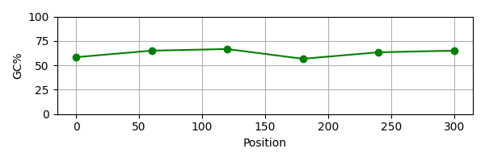
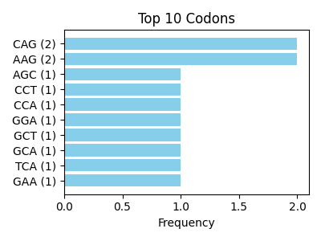

Gene Summary Report
Gene Name: OM489474.1
Description: OM489474.1 Homo sapiens INS (INS) mRNA, partial cds, alternatively spliced
Length: 366 bp
GC%: 62.57%
AT%: 37.43%
Current Chunk (Position 0-60)
AGCCCTCCAGGACAGGCTGCATCAGAAGAGGCCATCAAGCAGGTCTGTTCCAAGGGCCTT
Amino Acid:
SPPGQAASEEAIKQVCSKGL
Detected ORFs
- No ORFs found in this chunk.
GC Content Plot

Top 10 Codon Usage
